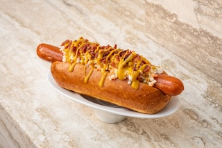

Hotdog
Home

Description
This recipe brings the nostalgic taste of summer cookouts right to your kitchen. High-quality beef frankfurters are pan-seared or grilled until the casings get a slight snap and char, locking in the savory, salty juices. Placed inside a lightly steamed or toasted bun, the rich meat perfectly balances against the sharp acidity of yellow mustard and the vibrant sweetness of pickle relish. It is a quick, satisfying meal that requires minimal effort but delivers a timeless flavor profile.
Ingredients
- 4 high-quality all-beef frankfurters
- 4 standard hot dog buns
- 2 tbsp yellow mustard
- 4 tbsp sweet pickle relish
- 1 tbsp butter (optional, for toasting the buns)
Steps
- Prep and heat:2 mins.Bring a grill pan or cast-iron skillet to medium-high heat. If you prefer toasted buns, spread a thin layer of butter on the inside surfaces.
- ook the franks:5-7 mins. Place the frankfurters into the hot pan. Turn them occasionally to ensure an even, lightly charred crust forms on all sides.
- Toast the buns:1-2 mins.During the last two minutes of cooking the meat, place the buns face-down in the pan or on the grill until they are warm and slightly golden.
- Assemble:1 min.Place a hot frankfurter into each bun, drizzle evenly with yellow mustard, and spoon a generous amount of sweet relish over the top. Serve immediately.